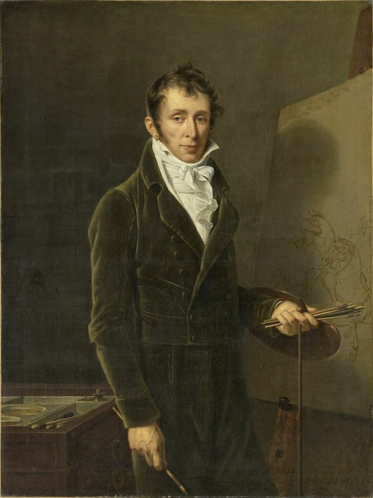

Pintor y litógrafo francés
Carle Vernet
1758–1836
Antoine-Charles-Horace Vernet, llamado Carle, nació en Burdeos en 1758 2 y se formó con su padre, Claude-Joseph Vernet 1. En 1782 ganó el Prix de Rome 12. Su hermana Émilie, pintora, fue detenida el 25 de junio de 1794 y guillotinada el 24 de julio 31. En 1808 Napoleón le concedió la Legión de Honor por una de sus escenas de batalla 1. Se le conoció sobre todo como pintor de caballos en movimiento: carreras, cacerías, caballería 1; desde 1816 se dedicó a estampas de vendedores callejeros, mercados de caballos y dandis 1, muchas de ellas litografías 4. Fomentó el talento de su hijo Horace 1. Murió en París en 1836 2.